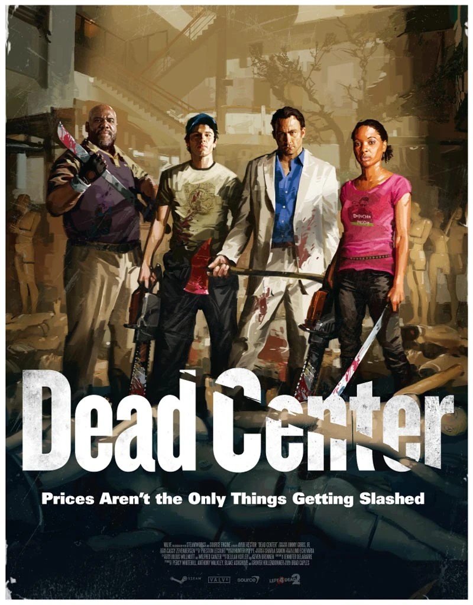
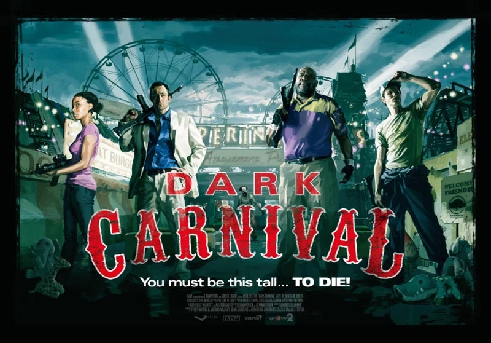
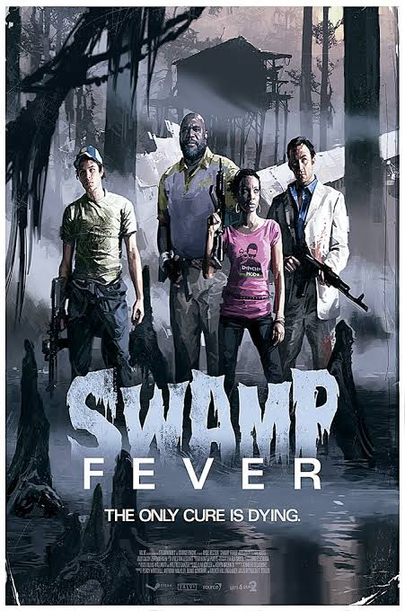
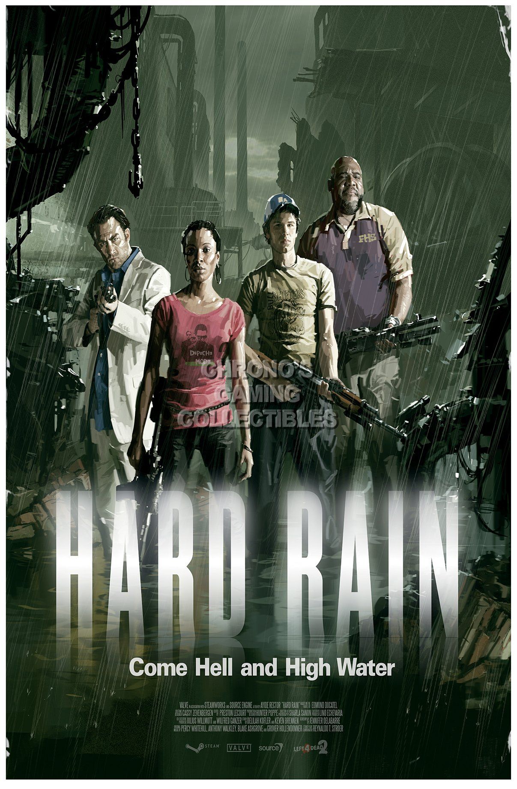
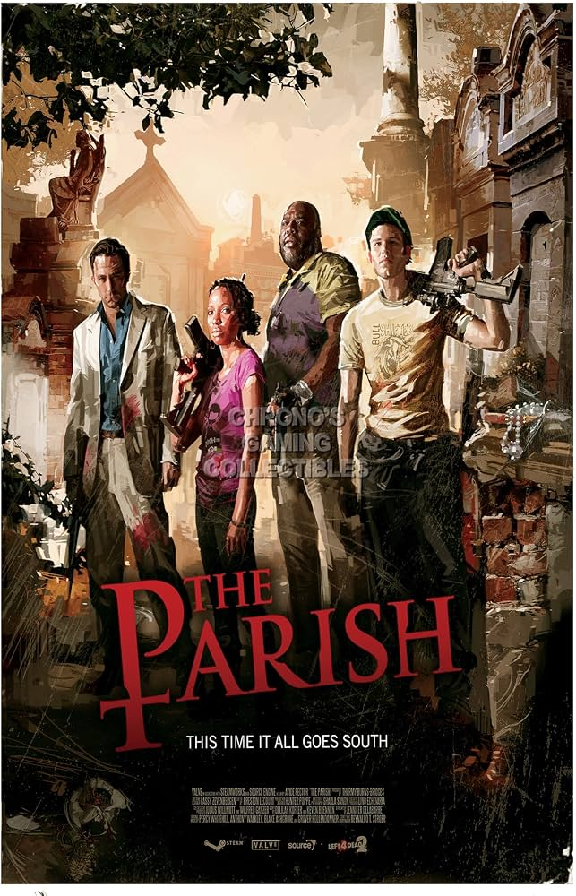

Las Campañas
La historia de Left 4 Dead 2 sigue a nuestros cuatro supervivientes a lo largo de un peligroso viaje por el sur de los Estados Unidos. Tratando de escapar de la rápida expansión de la Gripe Verde, el grupo debe atravesar ciudades en llamas, pantanos traicioneros y huracanes masivos para encontrar un lugar seguro administrado por los militares.
1. Dead Center (Punto Muerto)
La historia comienza en la ciudad de Savannah, Georgia. Los supervivientes llegan tarde al tejado del hotel "The Vannah" justo cuando el último helicóptero de evacuación de la CEDA se aleja. Sin otra opción, el grupo debe descender por el hotel en llamas, cruzar las calles infestadas y pedir ayuda al excéntrico dueño de una armería llamado Whitaker. Su objetivo final es llegar al Centro Comercial Liberty para robar el famoso auto de carreras de Jimmy Gibbs Jr. y escapar de la ciudad pisando el acelerador a fondo.

| Curiosidades: Dead Center | Detalle |
|---|---|
| El Coche de Jimmy Gibbs Jr. | Tiene un 5% de probabilidad de generar un "Zombi Jimmy Gibbs Jr." especial en el evento final. |
| Infectados de la CEDA | Es la única campaña donde los zombis llevan trajes anti-riesgos, siendo inmunes al fuego de los Molotov. |
2. Dark Carnival (Feria Siniestra)
Tras escapar de Savannah, la carretera se encuentra completamente bloqueada por kilómetros de autos abandonados. Obligados a abandonar el auto de Jimmy Gibbs, los supervivientes continúan a pie hasta llegar al parque de atracciones "Whispering Oaks". La campaña los obliga a encender diversas atracciones ruidosas (como una montaña rusa y un carrusel) para avanzar, atrayendo inmensas hordas. El épico clímax se desarrolla en el escenario de la banda de rock "Midnight Riders", donde usan las luces y pirotecnia del concierto para pedir rescate a un helicóptero.

| Curiosidades: Dark Carnival | Detalle |
|---|---|
| Gnomo Chompski | En el minijuego de tiro al blanco puedes ganar a este gnomo. Llevarlo hasta el final otorga un logro especial. |
| Concierto Épico | La música que suena en el evento final ("Midnight Ride" y "One Bad Man") fue compuesta específicamente para el juego. |
3. Swamp Fever (Pantanos)
El piloto que los rescató en la feria resulta estar infectado. Tras un disparo defensivo, el helicóptero se estrella en los sombríos pantanos de Luisiana. Perdidos en zonas anegadas de agua que ralentizan sus movimientos, descubren aldeas rústicas arrasadas por el virus y un avión de pasajeros estrellado. Finalmente, logran refugiarse en una gigantesca mansión de plantación en ruinas, donde resisten el ataque final hasta ser rescatados por Virgil, un amable civil originario de Cajún que viaja en su barco de vapor.

| Curiosidades: Swamp Fever | Detalle |
|---|---|
| Hombres de Barro | El zombi poco común de esta campaña camina a cuatro patas y ciega a los jugadores con lodo si los golpea. |
| Atmósfera | El agua reduce drásticamente la velocidad de movimiento, haciendo que los ataques del Infectado "Charger" sean devastadores. |
4. Hard Rain (El Diluvio)
El barco de Virgil se está quedando sin combustible para llegar a Nueva Orleans. Deja a los supervivientes en el pequeño pueblo industrial de Ducatel, Misisipi, con la misión de buscar diésel en una gasolinera distante. Esta campaña es única porque se divide en dos fases: un viaje de ida atravesando un ingenio azucarero abandonado, y un peligroso viaje de regreso por el mismo camino. Sin embargo, en el trayecto de vuelta, un violento huracán inunda todo el pueblo, reduciendo la visibilidad a escasos metros y ralentizando drásticamente al grupo mientras cargan los pesados bidones de gasolina.

| Curiosidades: Hard Rain | Detalle |
|---|---|
| Clima Dinámico | Las fuertes tormentas ocurren de manera intermitente. Cuando llueve fuerte, es casi imposible escuchar acercarse a los Infectados Especiales. |
| Witches Inquietas | El ingenio azucarero está infestado de múltiples Witches errantes que se sienten atraídas por el olor a azúcar, haciendo que avanzar sea un reto de sigilo. |
5. The Parish (La Parroquia)
Virgil finalmente los deja en los muelles de Nueva Orleans. La ciudad ha sido tomada por el ejército, que está evacuando a los no infectados y ejecutando civiles que puedan portar el virus. Los supervivientes descubren que, aunque son inmunes, son "portadores asintomáticos", por lo que los militares podrían dispararles. Abriéndose paso por el Barrio Francés bajo la luz del sol, llegan al gran puente conector de la ciudad. El épico y agotador final consiste en cruzar este gigantesco puente lleno de autos destruidos e infectados, todo esto mientras aviones militares bombardean la estructura para intentar frenar a los zombis. Al llegar al otro lado, un helicóptero militar los evacúa hacia un futuro incierto.

| Curiosidades: The Parish | Detalle |
|---|---|
| Final en Movimiento | A diferencia de otras campañas donde el equipo defiende un punto estático, en The Parish el evento final exige avanzar constantemente por el puente sin mirar atrás. |
| Infectado Antidisturbios | Aparecen policías zombificados con armadura frontal completa. Solo se les puede matar disparándoles por la espalda. |